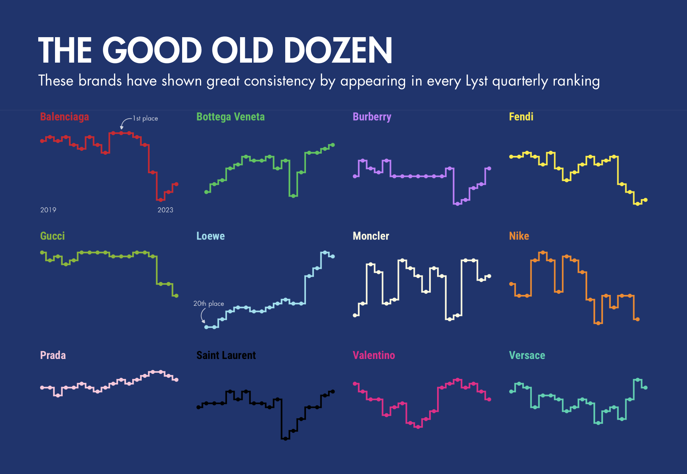
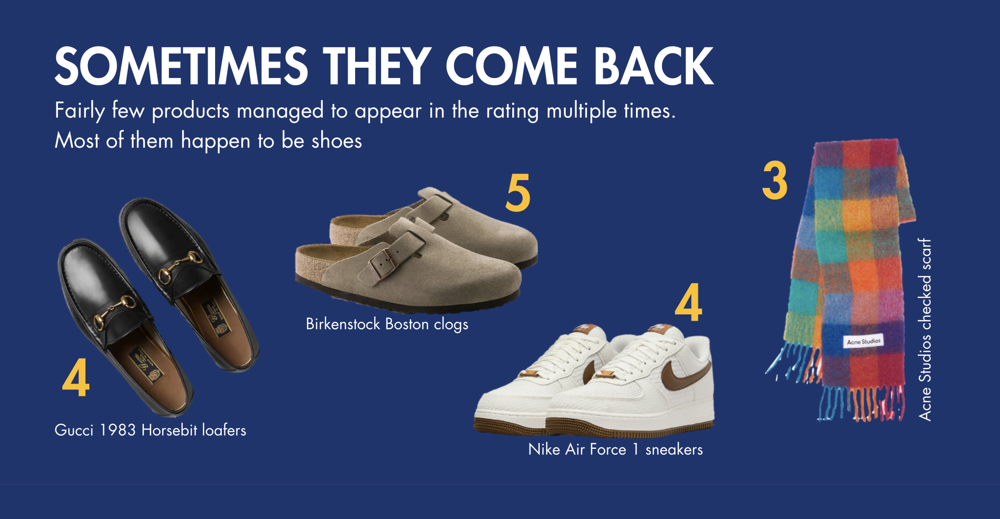
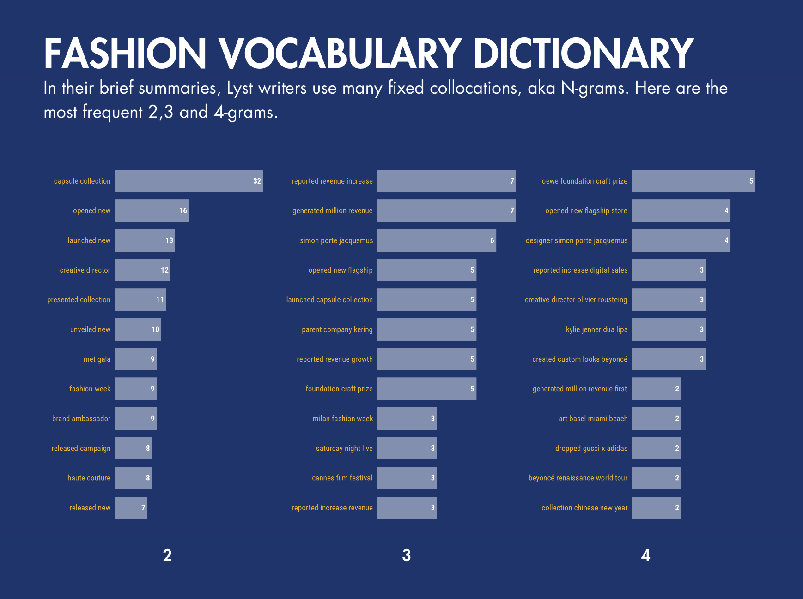

The Lyst Index - Data Report

The Lyst Index
provides quarterly reports on the state of the fashion market with ratings of top brands and products.
With my partner in crime Eugenia Demsha we decided to collect all available issues and analyze the underlying long-term trends.
Our work resulted in this data report in a webpage format.
My job was all primary data analysis and chart building, as well as the page design. In this project I explored some dataviz options offered by Flourish.
The biggest discovery was the integration of Flourish into Canva, which is extremely convenient.
The report was intended to include a wide range of chart types, so in addition to Flourish, I used Tableau, PowerPoint and a bit of creativity.
Eugenia conducted a linguistic research of articles and highlighted popular fashion vocabulary in form of most frequent words and collocations.
Here are some highlights from the report.


